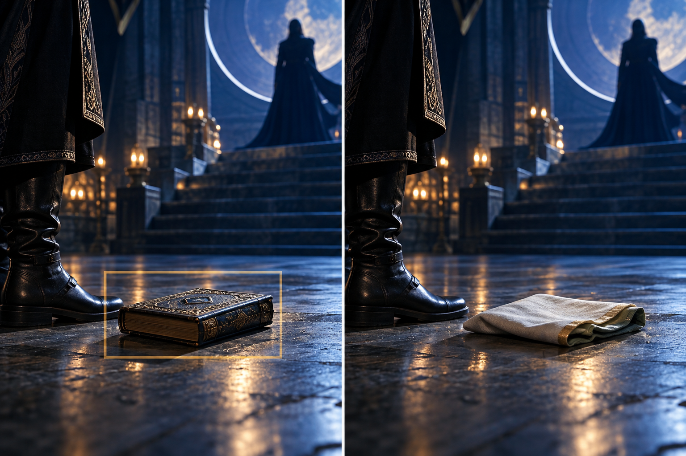

기생충
짜파구리 → Ram-don
낯선 음식 이름을
ramen + udon으로 풀었습니다.
관객이 장면을 따라갈 수 있도록
익숙한 단어로 의미를 전달.
현재 슬라이드를 유지하며 디자인을 바꿉니다.
같은 K-콘텐츠.
전혀 다른 반응.
이야기의 힘은 같아도,
그 이야기를 읽는 문화는 다릅니다.
낯선 음식 이름을
ramen + udon으로 풀었습니다.
관객이 장면을 따라갈 수 있도록
익숙한 단어로 의미를 전달.
125화의 인종차별적 내용과
흑인 비하 표현으로 비판이 확산.
2023년 9월 북미 서비스 중단.
단순한 번역 오류를 넘는 문제.
번역할 단어뿐 아니라, 공개할 표현의 맥락까지 검토해야 합니다.
수상이 번역 한 줄의 결과라는 뜻은 아닙니다. 두 사례는 문화적 맥락의 중요성을 설명합니다.
03 / 09세계로 가기 전,
K-pop · 웹툰 · 드라마·영화를 국가별 맥락으로 검토.
창작 의도를 살리는 수정안을 제안합니다.
guilty pleasure
hidden treasure
타깃 연령과 가사 전체를 검토하고,
비슷한 끝소리의 대체 표현을 제안.
가상 예시 · 해당 표현 자체는 금기가 아니며 보컬·멜로디 검토 필요
05 / 09외형에 기대는 설정
행동으로 드러내는 악역
문제가 될 수 있는 컷을 짚고,
표정·행동 중심의 연출을 제안.
가상 예시 · 그림은 실제 작품의 문제 장면이나 AI 탐지 결과가 아닙니다
06 / 09출처 모를 보컬 샘플
맥락을 확인한 대체 소스
검토할 구간을 표시하고,
BPM·분위기를 살린 대체 소스 제안.
가상 예시 · 종교성은 주파수만으로 판정하지 않으며 전문가 확인 필요
07 / 09
성물로 오인될 소품
세계관에 맞는 일반 소품
문제 프레임과 타임코드를 짚고,
소품 교체·구도 수정을 제안.
가상 예시 · 책의 외형만으로 성물 여부를 단정하지 않습니다
08 / 09좋은 K-콘텐츠가 문화적 오해를 넘어
더 많은 관객에게 닿을 수 있도록.